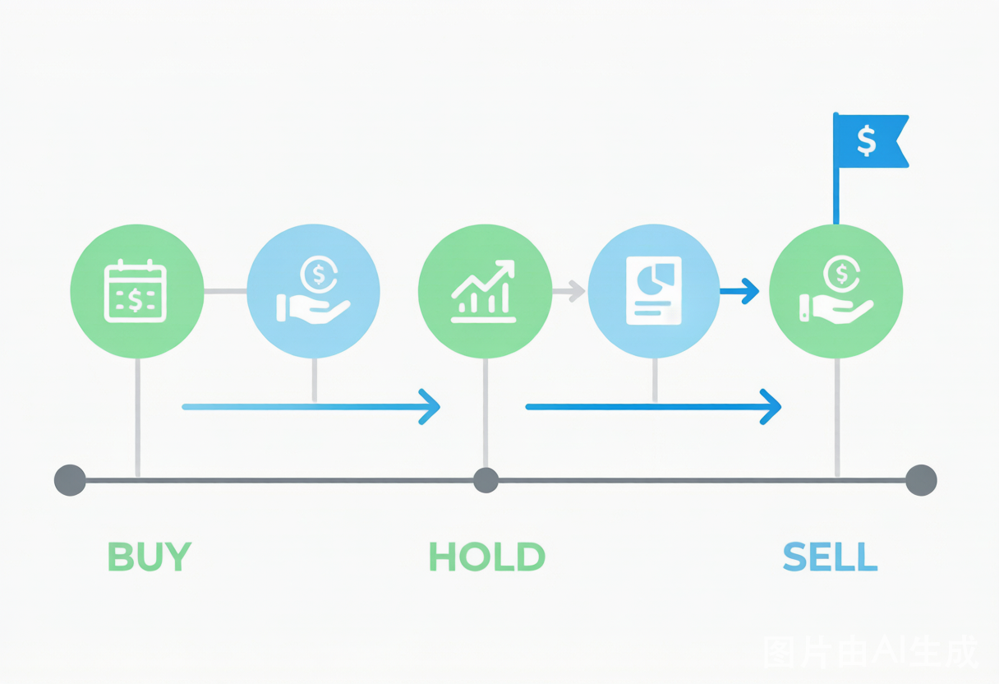

中国公募REITs投资入门2025：高速公路vs产业园vs仓储物流，哪种底层资产分红最稳？
2025年中国公募REITs深度投资指南：四类底层资产分红收益率全对比、买卖时机判断方法、5大误区剖析，附真实投资者案例和30只已上市REITs数据排行。
**摘要：** REITs被称为"收租神器"——花1000元就能当高速公路/产业园/仓储物流的股东。但2025年REITs市场已从狂热回归理性，破发的产品不在少数。本文用30只已上市REITs的真实数据，告诉你哪种底层资产赚钱最稳、什么时候买才不被套。
REITs到底是什么？一句话讲清底层逻辑
REITs（Real Estate Investment Trusts，不动产投资信托基金）的本质就是：把一栋楼、一条高速公路或一个产业园"拆成"无数份，每份卖几块钱到几十块钱，你买了就是股东，享有这个资产产生的租金/收费收入的分红权。
**关键机制：强制高比例分红。** 中国公募REITs的监管要求是——每年必须将**可供分配金额的90%以上**分给投资者。这就让REITs的收益来源非常清晰：主要靠分红，而非靠二级市场买卖差价。
举个例子：你花10,000元买了某高速公路REITs。这条高速一年的通行费收入扣掉运营成本后，有6亿元可用于分红。假如这只REITs总规模是100亿元，你的1万元占十万分之一，那你的分红就是：6亿 × 0.00001 = **600元**，对应分红收益率6%。
**核心认知：** REITs不是"股票"——它是你当包租公/包租婆的最低门槛。但它也有价格波动，买贵了一样亏钱。
2025年中国REITs市场全景：30只产品、四类底层资产
截至2025年5月，中国公募REITs市场已上市产品约30只，总规模突破**1,200亿元**。按底层资产类型分为四大类：
| 底层资产类型 | 代表产品 | 现金分派率（2024年） | 价格波动 | 适合人群 |
|---|---|---|---|---|
| **高速公路** | 中金安徽交控REIT、浙商沪杭甬REIT | **7.5%-9.5%** | 中-高 | 追求高分红、能承受价格波动 |
| **产业园** | 博时蛇口产园REIT、东吴苏园REIT | **4.0%-5.5%** | 中 | 看好产业升级、中等风险偏好 |
| **仓储物流** | 中金普洛斯REIT、红土盐田港REIT | **4.5%-6.0%** | 低-中 | 稳健分红、电商物流受益者 |
| **保障性租赁住房** | 华夏北京保障房REIT、中金厦门安居REIT | **3.5%-4.5%** | 低 | 极度保守、看重政策确定性 |
数据来源：沪深交易所2024年报、各REITs年度分红公告（截至2026年4月）
四类资产的分红率呈"高速公路 > 仓储物流 ≈ 产业园 > 保障房"的阶梯。但分红率高不代表"稳稳的幸福"——高速公路的分红高度依赖经济活跃度和车流量，如果经济下行，通行费收入可能双位数下滑。
真实投资者案例：三人买了三种REITs，一年后收益差4倍
案例一：老王（52岁，退休教师）——稳健分红派
**背景：** 老王2024年1月投入30万元买入某保障房REITs，当时价格为3.10元/份，现金分派率约4.2%。他的想法很朴素："保障房是政府支持的，租金稳定，不会有大波动。"
**一年后结果（2025年1月）：**
- 分红收入：30万元 × 4.2% = **12,600元**
- 价格变化：从3.10涨至3.35（涨幅约8%）
- 总回报：分红 + 价差 = 12,600 + 7,500 = **20,100元**（收益率6.7%）
**老王总结：** "比银行理财强，波动也小，适合我这年纪。就是分红一年才一次，等得有点着急。"
案例二：小陈（34岁，IT工程师）——追高买入派
**背景：** 小陈2024年3月听说"REITs很火"，追涨买入某高速公路REITs，买入价8.5元/份（当时分派率约7.2%），投入20万元。
**一年后结果：**
- 分红收入：20万 × 7.2% = 14,400元
- 价格变化：从8.5跌至7.2（跌幅**15.3%**）
- 总回报：14,400 - 26,000 = **-11,600元**（收益率**-5.8%**）
**小陈懊悔：** "分红确实拿到了，但本金亏了2万多！后来才知道，高速REITs在2024年下半年受经济数据影响大幅回调，我买在阶段性高点了。"
案例三：刘女士（45岁，个体经营者）——组合配置派
**背景：** 刘女士50万分散买了3只REITs：20万产业园（分派率5%）、15万仓储物流（分派率5.5%）、15万保障房（分派率4%）。
**一年后结果：**
- 分红总收入：10,000 + 8,250 + 6,000 = **24,250元**
- 价格变化：产业园涨3%、仓储物流涨5%、保障房涨8%
- 价差收入：6,000 + 7,500 + 12,000 = 25,500元
- 总回报：49,750元（收益率**9.95%**）
**刘女士心得：** "REITs和买股票一个道理——不能赌一只，要分散。高速公路分红最高但我没买，波动太大了，不适合我拿长期。"
**三个案例的核心教训：** ①REITs分红再高也不能无视买入价格——买贵了照样亏；②不同类型REITs分散配置能显著降低波动；③以分红为目的至少持有2年以上，别做短线。
四类底层资产深度对比：到底谁最值得买？
很多人只看分派率选REITs，这是最大的误区。四类资产的风险收益特征完全不同：
| 深度对比维度 | 高速公路 | 产业园 | 仓储物流 | 保障房 |
|---|---|---|---|---|
| 现金分派率 | 7.5%-9.5% | 4.0%-5.5% | 4.5%-6.0% | 3.5%-4.5% |
| 收入稳定性 | 中（受经济周期影响大） | 中-低（空置率波动大） | 较高（电商刚需） | **最高**（政策兜底） |
| 增长潜力 | 低（车流饱和） | **高**（租金涨价） | 中-高（电商扩张） | 低（租金管控） |
| 二级市场波动 | 大（±20%/年） | 中（±15%/年） | 较低（±10%/年） | **最低**（±5%/年） |
| 到期处置 | 经营权到期归零 | 产权可出售 | 产权可出售 | 产权可出售 |
| 适合持有期 | 3-5年 | 5年以上 | 3年以上 | 长期持有 |
**最关键的区别：产权类 vs 经营权类。** 高速公路REITs属于"经营权类"——30年经营期满后，资产无偿交还政府，到期价值归零。而产业园、仓储物流、保障房是"产权类"——到期后资产本身还有价值。这意味着：高速公路的高分红，有一部分其实是"本金的返还"，不是纯收益。
数据来源：中证指数公司2025年REITs分类指引、各REITs招募说明书
REITs买卖的5个致命误区，90%的新手都中过招

误区一："分红率高的就是好REITs"
**反面教材：** 某高速公路REITs分派率高达9%，但2024年车流量同比下滑12%，分红实际兑现仅7.2%。更糟的是——二级市场价格跌了20%。
**正确做法：** 分红率要看"可持续性"，而非单期数字。查询该REITs过去四个季度的可供分配金额是否稳定增长，如果忽高忽低，高分红可能是"一次性收益"（如处置资产），不可持续。
误区二："REITs稳赚不赔，比股票安全"
**反面教材：** 2023-2024年，多只产业园REITs因租户退租导致出租率骤降（部分从95%降至70%），价格跌幅超过**30%**。买在IPO首日的投资者，至今仍深套。
**正确做法：** REITs本质是权益类资产，价格波动是常态。特别是经济下行周期，办公楼和产业园的出租率会直接冲击分红和价格。REITs占个人总资产建议不超过**10%**。
误区三："上市首日打新稳赚"
**反面教材：** 2023年下半年起，REITs一级市场热情消退，多只产品上市首日即破发（价格跌破发行价），跌幅3%-7%不等。2024年虽有所回暖，但"打新必赚"的时代早已结束。
**正确做法：** 与其打新，不如等REITs上市3-6个月后，观察其实际经营数据（出租率、车流量）再决定是否买入。上市初期的价格往往包含了过高的市场情绪溢价。
误区四："REITs分红不用交税，所以收益都是净的"
**部分错误：** 目前公募REITs的分红确实暂免个人所得税，但这只是**暂时性政策**。如果将来政策调整（如征收10%-20%的分红税），持有者的实际到手收益将缩水。此外，转让REITs产生的资本利得，目前暂免个人所得税，但机构投资者的增值税如何处理仍有不确定性。
误区五："买一只就够了，反正都是REITs"
**反面教材：** 把全部REITs资金押注一只产业园REITs，结果该园区大租户退租，出租率暴跌20%，价格腰斩。单押一只REITs的风险极高——底层资产集中、运营方集中、区域集中。
**正确做法：** REITs组合至少包含**2-3种不同类型的底层资产**（如仓储物流+保障房，或高速公路+产业园），总持仓3-5只，且避免同一区域的过度集中。
2025年REITs投资策略：什么时候买、怎么配、持有多久
买入时机判断：两个关键指标
| 买入信号 | 红灯（暂缓） | 绿灯（可考虑） |
|---|---|---|
| **P/FFO比率**（类似PE） | >20倍（偏贵） | 12-16倍（合理） |
| **现金分派率 vs 10年国债收益率** | 利差<3个百分点 | **利差>4个百分点** |
| **二级市场折溢价** | 溢价>15% | 折价或小幅溢价 |
FFO（Funds From Operations，营运现金流）是衡量REITs真实盈利能力的核心指标，近似于"REITs版的净利润"。
不同资金量的配置方案
**方案A：5-10万元（刚入门）**
| 配置 | 金额 | 理由 |
|---|---|---|
| 保障房REITs（1只） | 50% | 波动最小，分红稳定 |
| 仓储物流REITs（1只） | 50% | 分红适中，电商红利仍在 |
预期年化总回报（分红+价差）：**5%-7%**
**方案B：10-50万元（有经验投资者）**
| 配置 | 金额 | 理由 |
|---|---|---|
| 保障房REITs | 30% | 压舱石 |
| 仓储物流REITs | 30% | 稳健分红 |
| 高速公路REITs | 20% | 高分红，注意买入价格 |
| 产业园REITs | 20% | 弹性大，博取增长 |
预期年化总回报：**6%-9%**（但波动更大）
持有策略：多久合适？
REITs不适合做短线。建议持有策略：
- **保障房/仓储物流类**：长期持有（3年以上），以分红为主要收益来源
- **高速公路类**：中期持有（2-3年），在分红率处于历史高位时买入
- **产业园类**：中长期持有（3-5年），需要关注宏观经济和产业周期
2024年REITs市场整体平均换手率约1%-2%/日，远低于股票市场，流动性偏低。大额资金进出需要分批操作。
常见问题 FAQ
**Q：REITs分红要交税吗？和股票分红有什么区别？**
A：目前公募REITs向个人投资者分配的红利，**暂免征收个人所得税**（依据财政部、税务总局2022年公告）。但这是阶段性政策，未来是否会恢复征税存在不确定性。股票分红目前需缴纳个人所得税（持股1个月内20%、1个月-1年10%、1年以上免税）。REITs转让价差目前个人也暂免个税——整体税负环境相当友好，这也是REITs吸引力的重要来源。
**Q：REITs会退市吗？什么情况下会退市？**
A：会。触发退市的情形包括：①基金资产净值连续低于规定门槛（通常5000万元）；②基金份额持有人数量持续不达标；③底层资产出现重大风险（如高速公路被收回、产业园区核心租户全部退租）；④基金管理人/运营管理机构出现严重违规被撤销资格。历史上中国REITs市场尚未出现退市案例，但海外市场（美国、新加坡）REITs退市并不罕见。
**Q：REITs和房地产股票、REITs ETF有什么区别？**
A：三者差异极大——REITs直接持有不动产并强制90%以上分红，收益来源透明；房地产股票是开发商/运营商的股权，分红不强制，业绩受销售周期波动大；REITs ETF（如中证REITs指数基金）是一篮子REITs的组合，分散了个券风险但管理费会稀释部分收益。对于资金量小（<5万）的投资者，REITs ETF是入门优选。
**Q：REITs的分红频率是怎样的？一年分几次？**
A：中国公募REITs通常**每年至少分红一次**，部分产品每半年或每季度分红。具体看招募说明书约定。分红除权日当天，REITs价格会相应下调（类似于股票除息），所以"抢在分红前买入"并不能套利——分红多拿的钱恰好被价格下跌抵消。正确做法是长期持有，享受持续分红。
*本文数据来源于沪深交易所2024-2025年REITs年报、中证指数公司公开数据及各基金招募说明书。REITs投资有风险，过往分红不代表未来收益。*
*REITs是权益类投资工具，价格会波动，投资者可能损失本金。本文不构成投资建议。*